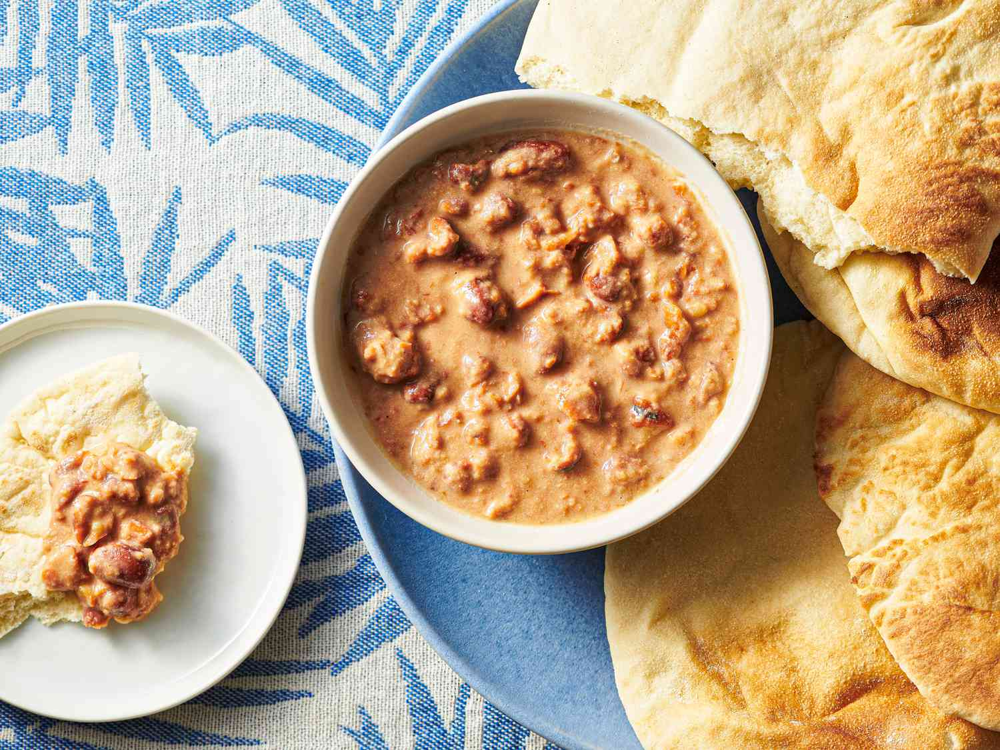

Fried Potatoes Wedges
Ingredients:
- 2 big fry-type potatoes
- 1 tablespoon of salt, black pepper, and cumin
Instructions:
- Cut the potatoes into big chunks of potatoes wedges.
- Fry them for 10 minutes.
- Put them on a plate with paper towl on top.
- Sprinkle the salt, black pepper, and cumin.
- serve hot with Egyptian Baladi bread.

Fool with Taheni
Ingredients:
- A 10 EGP plain Fool mixture from a restaurant
- 1 to 1 and half lemons
- 20-30 grams of taheni
- 2-4 tablespoons of salt, cumin, dried coriander
- 20-30ml of oil
Instructions:
- Put the Fool mixture on a very low heat to warm up and heat slowly.
- Prepare the serving bowl by puting the salt, cumin, dried coriander in it.
- squeeze the lemons on the serving bowl.
- pour the oil and taheni into the bowl.
- Finally, take the fool mixture and pour it into the serving plate, while crashing the fava beans and mixing them.

Cheese Salad
Ingredients:
- 2 medium tomatoes
- 2 medium cucumbers
- 1 small-medium chilli pepper
- 100 grams of regular medium-salt white cheese
- 20-30 grams of taheni
- 20-30ml of oil
Instructions:
- Cut the tomatoes, cucumbers, and chilli pepper into small cubes.
- mix the tomatoes, cucumbers, chilli pepper, cheese, Taheni, and oil together well and stir them.

Stirred Fried Eggs
Ingredients:
- 2-3 eggs
- 2-3 spoons of original Egyptian butter or clarified butter
- 1 tablespoon of salt and black pepper
Instructions:
- Heat the frying pan on medium heat for 1-2 minutes after putting the butter.
- Crack the eggs to the pan.
- Add slat and pepper.
- Stir the eggs in the pan using a wooden spoon for 5 minutes on medium heat.
- After the eggs are fully cooked put them on a plate and sprinkle some slat and pepper on top.